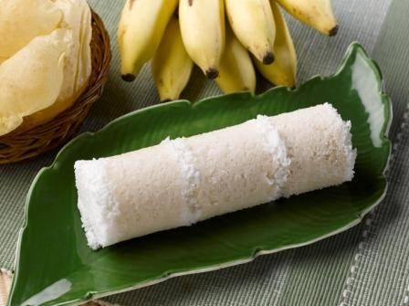

                                    <figure class="cards double">
                                        <figcaption class="caption">
                                            <h1><span style="color: #53cc48;"><strong>Puttu</strong></span></h1>    
                                            <strong>Ingredients</strong>:</p><p>&bull; 2 cups of rice</p><p>&bull; 1/2 cup of water</p><p>&bull; 1 cup of grated coconut</p><p>&bull; 1/2 tsp of salt</p><p><strong>Method</strong>:</p><p>Step 1: Soak the rice for about 4 to 5 hours, wash and drain the rice and powder it.(Do not powder it too fine). Step 2 : On low flame dry roast the rice flour until it is evenly heated about 5 minutes. Take care not to brown the flour. (Step 1 and 2 can be skipped if we want to use readymade roasted rice flour) Step 3: Mix the rice flour and salt well together. Sprinkle palm full of water evenly on the flour a few times over and over till the flour is moist enough to hold together but still in a powder form. Step 4: In the puttu maker drop in a spoonful of coconut and then a fistful of rice flour and repeat the layers till top of the puttu maker. Step 5: Steam it till you see the steam coming out of the top of the puttu maker (about 5 minutes). When done, with the help of a long skewer Push the puttu out on to a plate.</p><p>&nbsp;</p>
                                        </figcaption>
                                        
                                    </figure>
                                   